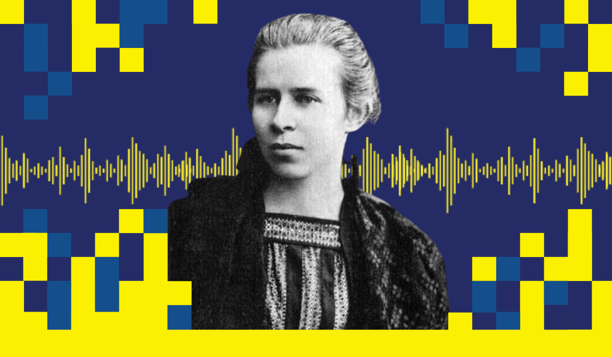
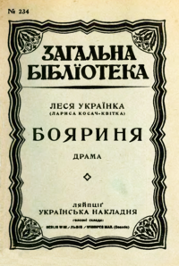

Ле́ся Украї́нка (справжнє ім'я — Лари́са Петрі́вна Ко́сач, у шлюбі Ко́сач-Кві́тка; 13 (25) лютого 1871, Новоград-Волинський, Волинська губернія, Російська імперія — 19 липня (1 серпня) 1913, Сурамі, Тифліська губернія, Російська імперія (нині Грузія)) — українська письменниця, перекладачка та культурна діячка, співзасновниця літературного гуртка «Плеяда» та групи Українська соціал-демократія. У сучасній українській традиції входить до переліку найвідоміших жінок давньої та сучасної України.
Писала в жанрах поезії, лірики, епосу, драми, прози, публіцистики, розвинула жанр драматичної поеми в українській літературі. Працювала в галузі фольклористики (наспівала 220 народних мелодій) і активно долучалася до процесів українського жіночого руху та національного відродження. Серед мистецької спадщини — збірки поезій «На крилах пісень» (1893), «Думи і мрії» (1899), «Відгуки» (1902), поеми «Давня казка» (1893), «Одно слово» (1903), драми-поеми «Кассандра» (1901—1907), «В катакомбах» (1905), «Лісова пісня» (1911), «Камінний господар» (1912), «Бояриня» (1913).
Віршувати Лариса Косач почала в 9 років: поезію «Надія» написала під впливом звістки про долю тітки Олени Антонівни Косач (в шлюбі Тесленко-Приходько), засланої за участь у революційному русі. 1884 року у львівському журналі «Зоря» вперше надруковано вірші «Конвалія» та «Сафо» і зафіксовано ім'я — Леся Українка; у наступних перевиданнях до вірша «Сафо» Леся додала посвяту братóвій: «Любій Шурі Судовщиковій на спомин». 1885 року у Львові вийшла збірка її перекладів з Миколи Гоголя (виготовлена спільно з Михайлом).
Окреме місце в літературній спадщині Лесі Українки має мистецька проза. Перші оповідання з сільського життя («Така її доля», «Святий вечір!», «Весняні співи») змістом і мовою пов'язані з народними піснями. У жанрі казки написані «Три перлини», «Чотири казки зеленого шуму», «Лелія», «Біда навчить», «Метелик». Гострим драматизмом відзначаються повісті «Жаль» і «Приязнь». Залишилася не закінченою передсмертна повість Українки «Екбаль Ганем», призначена змалювати психологію арабської жінки.
За Ларисою Мірошниченко, «у пошуках точності зображуваного Леся Українка в тексті (а через нього і в автоілюстраціях) найближче стояла до художника історичного жанру, що прагне максимально правдиво зображувати людей, події, сюжети, яких не бачив і навіть не міг бачити»[
Моральний конфлікт самореалізації індивідуальної свободи вирішується несприйняттям Українкою християнства як власної релігії: «Леся Українка не применшила етичні ідеали християнської релігії (добра, милосердя, любові, надії, віри, правди), однак неприйнятним для неї залишалися форми трактування певних християнських положень». У драматургії Лесі Українки відбувається постійна еволюція індивідуальних свобод людини до свободи етичної, коли прагненням серця не суперечать прагненням духу. Причому в її філософській концепції етична свобода вивищується над свободою фізичною та естетичною. Тому у драматичних поемах розкриваються істинні природа й характер людини з індивідуальною шкалою цінностей, в якій головне — не задоволення власних потреб чи пристрастей, а вищий моральний закон, не нав'язаний, а обраний добровільно.
Олександра Вісич виявила, що рухомі конструкції (незавершені твори) у Косач домінували над завершеністю. Драму «Осіння казка» дослідниця характеризує так: «Прочитання цього твору часом нагадує полювання за міражами та наштовхує на розуміння невичерпного потенціалу мозаїки дій та образів драми, змістові лакуни якої доречно трактувати як гру, майстерне жонглювання формою». Специфіка побудови драми-поеми «На полі крові», на думку Вісич, дозволяє стверджувати, що цей твір є зразком відкритої драми, оскільки вона "фактично позбавлена жорстких композиційних меж «початок-кінець». Леся Українка належала до авторів, які «проявляють непередбачуваність розвитку первинної моделі твору, нерідко вона відступала від чисто раціоналістичної заданості»